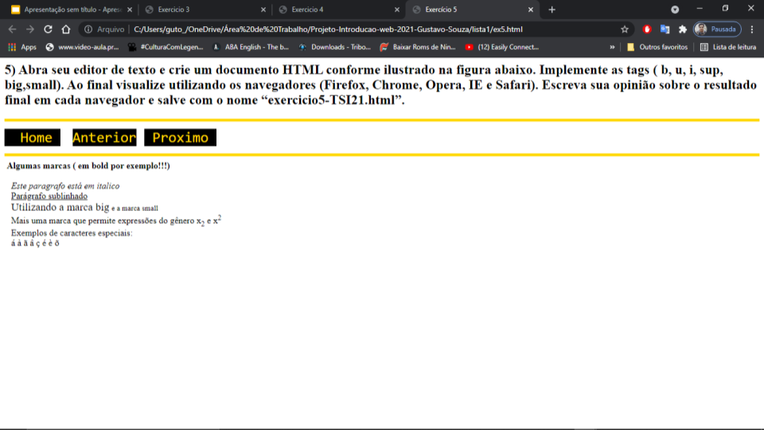
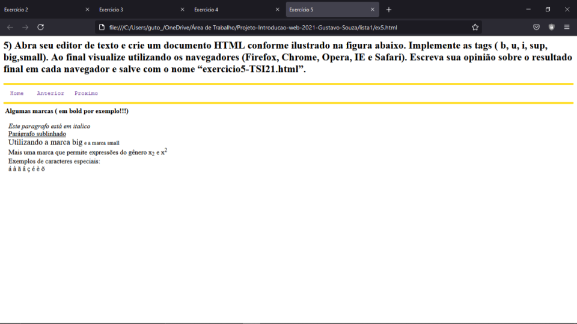
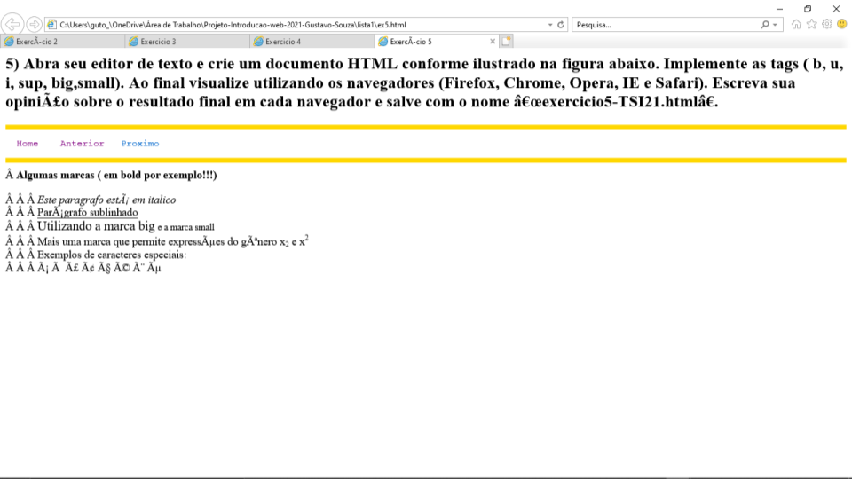

5) Abra seu editor de texto e crie um documento HTML conforme ilustrado na figura abaixo.
Implemente as tags ( b, u, i, sup, big,small). Ao final visualize utilizando os navegadores (Firefox, Chrome, Opera, IE e
Safari). Escreva sua opinião sobre o resultado final em cada navegador e salve com o nome
“exercicio5-TSI21.html”.
Algumas marcas ( em bold por exemplo!!!)
Este paragrafo está em italico
Parágrafo sublinhado
Utilizando a marca big e a marca small
Mais uma marca que permite expressões do gênero x2 e x2
Exemplos de caracteres especiais:
á à ã â ç é è õ
Visualizando em outros navegadores
 |
|  |
 |
|  |
 |
|  |